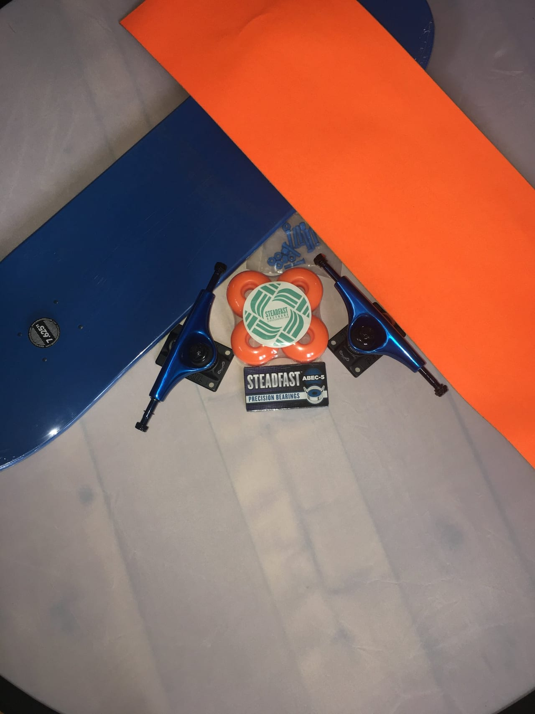

Bike Build
Building a Dream
Teams build real bikes and meet the kids who receive them onsite — our most powerful give-back.
One activity, two wins: a team that comes together, and a community that’s measurably better for it. Your people build bikes, boards and shoes that go straight to children who need them.

You’re here for your team. The giving is what makes the day unforgettable — and what makes it count toward your goals.
Donation totals and participation numbers you can put straight into CSR and ESG reporting.
Employees lean in when the work matters — this isn’t a forgettable volunteer shift.
Photos, stories and goodwill your people share — and your community remembers.
We coordinate the local charity and recipients, so you focus on your team.
Every program is a real product, built by your people and donated to children in need — paired with an experience that connects the team. New to this? See our guide to charity team building activities.
Teams build real bikes and meet the kids who receive them onsite — our most powerful give-back.

Assemble skateboards from a bag of parts and gift a complete board to a child.

Build durable shoes for kids who’ve never owned a pair and create a lasting ‘Shoe Bank’.

From the first call to the final donation count, we run the logistics so your team can focus on the experience and your CSR lead gets clean numbers.
Whether you call it team building for charity, corporate charity days or simply team building with a purpose, the goal is the same: bring your people together around work that helps kids in need. Our corporate charity team building activities turn a single afternoon into measurable community impact — real bikes, boards and shoes — or, in Housewarming, real homes for shelter animals — your team builds and donates. It’s charitable team building your people actually remember, and team building with purpose that your CSR reporting can stand behind.
That’s the whole point. Connect your team to something bigger than themselves and the lesson — and the bond — lasts. We’ve been doing it since 2003, and produced the Guinness World Record–setting bike build for our client, DaVita.

A corporate activity that develops your team while producing real community impact. With Building Teams, employees build bikes, skateboards or shoes that are donated to children in need — combining engagement with measurable giving.
Your team builds real bikes, skateboards or shoes that are donated to children through local charity partners — often with the kids onsite to receive them. We coordinate the charity partnership for you.
Yes. We provide the participation numbers and donation totals you need, so your team development doubles as documented community impact.
Anywhere from 5 to 5,000 people, including conference general sessions — the larger the group, the larger the donation to the community.
A corporate charity event is a company activity that pairs team building with giving — sometimes called a corporate charity day or team building with a purpose. Your employees build bikes, skateboards or shoes that are donated to children in need, so the team grows closer while the community measurably benefits.
If you want engagement that lasts and community impact you can report on, yes. Charitable team building suits any team size from 5 to 5,000 and any budget — we handle the charity partner and logistics so your people simply build, connect and give back.
Building Teams is the specialist here — give-back builds are our core product, not a side offering. Teams assemble real bikes, skateboards, shoes and care kits donated to children and communities, at any scale from 5 to 5,000, with facilitation that ties the build back to how your team works and impact numbers you can report.
Yes — that's exactly what we do. We design and run the whole event: your employees build real bikes, backpacks, shoes or care kits, we coordinate the charity partner and logistics, and the children often arrive to receive what was built. Teams we've guided have built 50,000+ bikes since 2003.
Participant reactions the moment the children ride in to receive what their team built.
A few of the thousands of teams who trust us


Unedited comments from participant evaluation forms across our give-back events. Only lightly de-duplicated.
You’re putting your reputation on this event — so we put ours on it too. We measure every event, and across 2,000+ events since 2003 our average is 4.76 out of 5. If your team rates their experience below 9 out of 10, we’ll make it right: we’ll re-run a session, or refund our facilitation fee. No fine print, no runaround.
Tell us your team size and the impact you want to make. We’ll design a give-back event that delivers both.
We reply within one business day. No obligation.